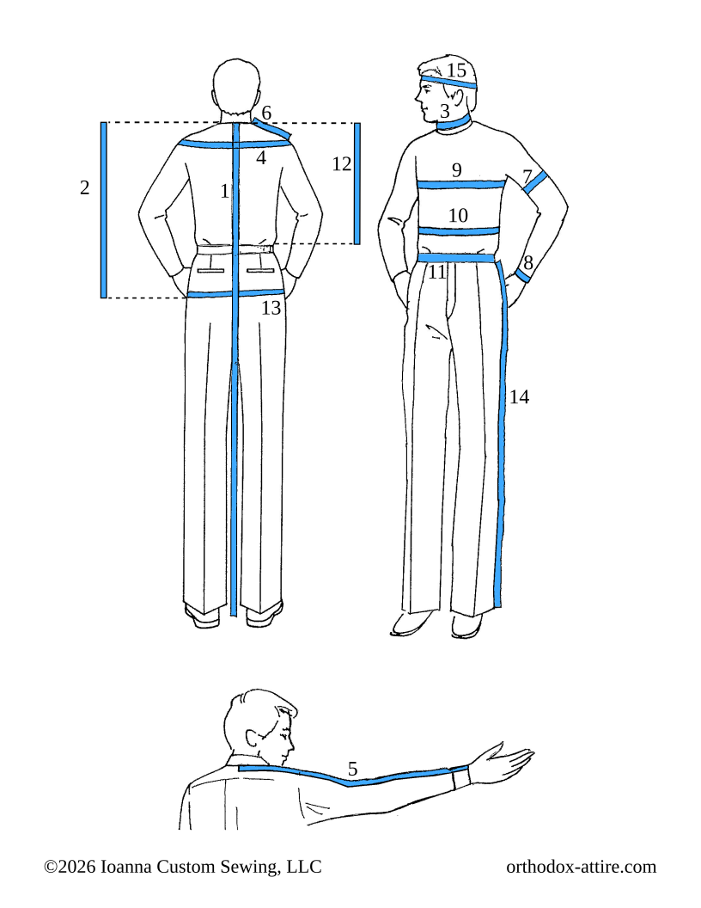

دليل أخذ المقاسات
ترجمة عربية لدليل أخذ المقاسات الصادر عن Ioanna Custom Sewing, LLC (orthodox-attire.com/measurement-guide).

- 1.طول الجبّة (rasso): يُقاس من قاعدة مؤخّرة العنق حتى الموضع الذي تودّون أن ينتهي عنده ذيل الجبّة.
- 1.طول الغنباز (cassock): يُقاس من قاعدة مؤخّرة العنق حتى الموضع الذي تودّون أن ينتهي عنده ذيل الغنباز.
- 2.طول الصدرية: يُقاس من قاعدة مؤخّرة العنق، حيث تستقرّ قاعدة ياقة القميص، حتى الموضع الذي تودّون أن ينتهي عنده ذيل الصدرية.
- 3.محيط العنق: يُقاس محيط العنق.
- 4.الكتفيّة (yoke): يُقاس عرض الظهر بخطّ مستقيم من عظمة الكتف إلى عظمة الكتف الأخرى.
- 5.طول الذراع: مع مدّ الذراع مستقيمةً وعموديّةً على الجسم، يُقاس من منتصف قاعدة مؤخّرة العنق، مرورًا بالكتف وعلى امتداد الذراع، حتى الرسغ.
- 5.طول كمّ الجبّة: مع مدّ الذراع مستقيمةً وعموديّةً على الجسم، يُقاس من منتصف قاعدة مؤخّرة العنق، مرورًا بالكتف وعلى امتداد الذراع، حتى طول كمّ الجبّة المطلوب.
- 5.طول كمّ الغنباز (cassock): مع مدّ الذراع مستقيمةً وعموديّةً على الجسم، يُقاس من منتصف قاعدة مؤخّرة العنق، مرورًا بالكتف وعلى امتداد الذراع، حتى طول كمّ الغنباز المطلوب.
- 6.الكتف: يُقاس من جانب العنق، حيث تستقرّ قاعدة ياقة القميص، حتى مفصل الكتف (حيث يلتقي الكتف بالذراع).
- 7.محيط العضد: يُقاس محيط العضد عند أعرض جزء منه، مع إرخاء الذراع بجانب الجسم.
- 8.محيط الرسغ: يُقاس محيط الرسغ عند العظمة.
- 9.محيط الصدر: يُقاس محيط الصدر عند أعرض جزء منه، أسفل الإبطين.
- 10.البطن/الخصر: يُقاس المحيط عند أعرض جزء من البطن، أو أسفل الأضلاع السفلية مباشرةً، أيّهما أكبر.
- 11.حزام البنطال (waistband): يُقاس محيط الجسم عند الارتفاع الذي تلبسون عنده البنطال.
- 12.نصف الظهر (half back): يُقاس من قاعدة مؤخّرة العنق نزولًا على امتداد العمود الفقري حتى الموضع الذي قِيس عنده الخصر، أو الموضع الذي تلبسون عنده البنطال. (في هذا الموضع تُثبَّت الأزرار وأعلى الجيوب الجانبية والأربطة.)
- 13.الورك/المقعد: يُقاس المحيط عند أعرض جزء من الأرداف.
- 14.الطول الخارجي للساق (outseam): يُقاس من الموضع الذي قِيس عنده الخصر، على امتداد جانب الساق، حتى الموضع الذي تودّون أن ينتهي عنده طرف البنطال السفلي.
- 15.محيط الرأس: يُقاس محيط الرأس عند الموضع الذي تلبسون فيه القلنسوة (skoufia).